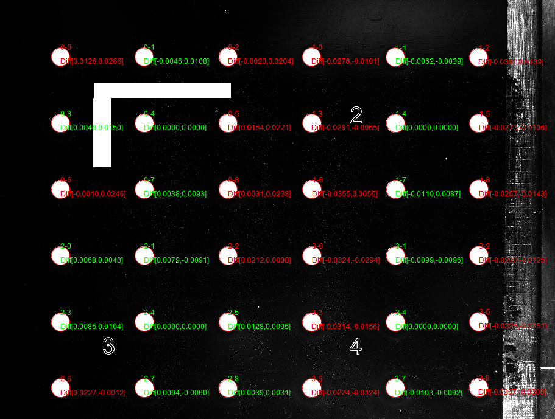
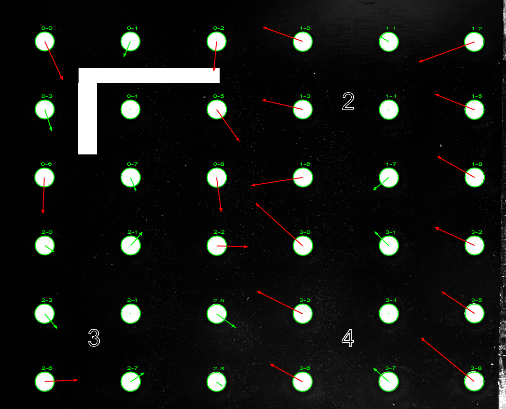

激光关联标定工具是在指定的搜索区域内对图像坐标和相应的振镜坐标进行关联，其关联结果如图1所示。

在常见的激光切割、激光打标、激光焊接等应用场景中，均可使用此工具进行图像坐标系和激光坐标系的关联标定。
在进行图像坐标系和激光坐标系关联标定时，首先需要将图像坐标和激光坐标一一对应。本工具支持任意旋转镜像的图像进行自动标定，所以需要在图像上有一个标准的特征，供图像处理算法自动抓取并计算图像的旋转镜像参数。如图2所示，标准的L型特征在激光坐标系X方向的长度为600Pixel，Y方向的长度为300Pixel，宽度为60Pixel。图像处理算法会自动抓取L边的边缘特征，并计算其两条边缘的夹角、旋转方向等参数，从而确定图像的旋转镜像参数。
图像坐标系和激光坐标系在进行关联标定计算时，会抽象成共面的直角坐标系，如图3所示。
其中两个坐标系的转换关系可以由如下公式表示。所以，当输入一组一一对应的图像坐标和激光坐标值，则可以根据此公式计算出两个坐标系之间的转换关系。

工具的执行流程：配置输入 -> 高级属性界面设置 -> 执行标定。
双击工具，在弹出的窗口中配置输入图像，如图4所示。
右键工具，点击”属性“进入高级界面，如图5所示。
点击“提取L边特征”进行图像中L边的自动提取，当提取成功后，会在对应的位置放置坐标轴，如图5所示。当自动提取失败时，允许用户勾选“手动查找”功能，在属性界面手动提取L边特征。需要注意的是，当自动提取L边时，会遍历图像中所有的线段特征，并按照一定的算法进行筛选，其中筛选的重要条件之一是L特征的长边与短边的比例为2：1。由于实际应用时激光打标会发生一定的外扩或内缩，导致L特征的外边缘比例不一定为标准的2：1，此时L特征的内边缘或内外边缘的组合更加接近2：1，从而导致L特征定位时不一定一直定位在外边缘处，如图6所示。但是通过内边缘或外边缘计算的图像旋转镜像参数一致，所以不影响最终的计算结果。
点击“提取L边特征”后，如果L边提取成功，则工具内部会根据L边的X轴和Y轴之间的关系，计算出图像的旋转镜像参数，如图7所示。其中Rotate表示图像的旋转角度，Mirror表示图像镜像参数。其中，Mirror总是为0或1，0表示图像没有镜像，1则表示图像有水平方向的镜像（注：垂直镜像总是能够通过水平镜像 + 旋转得到，所以本算法内部只有水平镜像的概念）；另外Rotate表示的旋转角度并不严格准确，当L边定位存在误差时，得到的旋转角度可能存在误差，如旋转角度理论值为0度，计算得到的旋转角度可能为1度、2度、-1度等。图像的旋转镜像参数仅在工具内部对抓取的圆形Mark进行自动排序时使用，存在一定角度的误差不会影响实际的排序结果，所以用户不需要过多关注此参数。当用户想要验证工具内部自动计算的旋转镜像参数是否正确时，可以使用“旋转镜像工具”链接标定的图像，旋转的角度为本工具计算的Rotate取整（如计算的Rotate为88°，则“旋转镜像工具”的旋转角度选择90）；Mirror为0时，无镜像，Mirror为1时，选择水平镜像，然后执行“旋转镜像工具”，查看其输出的结果图像中L特征的朝向是否为向右向下的。

标定方式共分为3中，九圆、N圆、多区域，其中九圆是N圆的特例，N圆是多区域的特例。进行标定方式的划分，主要是因为在实际应用中，九圆关联标定占据大部分比例的应用场景，所以将其单独提取出来，从而保证用户在使用九圆关联标定时，使用最少的操作步骤完成标定。
圆数量参数允许用户在使用N圆和多区域标定时，自定义每个区域圆特征的行数和列数，其中行数和列数的范围均为[0, 30]。
在进行圆结果提取时，默认的搜索方向为由内向外，且不允许用户修改，用户可以通过设定不同的搜索极性来满足实际的场景。其默认参数为任意，在大多数场景下，用户不需要对其进行修改。
当用户选择多区域标定时，会启用此按钮，允许用户通过点击上一组/下一组来切换当前的搜索区域。
全图搜索：适用于九圆/N圆的标定方式，当用户勾选时，会在全图范围内搜索圆形Mark。
实时刷新：主要响应用户的GUI拖动操作。当用拖动搜索区域或找圆工具GUI时，如果此选项被勾选，则会自动进行圆结果提取，当不勾选此选项时，需要点击“圆特征提取”按钮进行圆结果提取。
圆特征提取：当用户点击此按钮时，会搜索当前区域内找圆工具GUI对应的圆结果，并将圆结果显示在视图中。
激光坐标主要分为手动填充和文件读取两种方式，如图8所示。在进行激光坐标起始点和间隔填充时，起始点为当前搜索区域内激光坐标系下，X轴最小，Y轴最小的点的激光坐标值，间隔始终为正值。
当完成上述参数设置后，用户可以点击“标定计算”按钮进行标定结果计算。当完成计算后，会在每个圆心处显示此圆的标定结果误差。当误差值的X/Y方向超过“标定精度”数值时，会显示为红色，否则显示绿色，如图9所示。
图9所示为标定误差的精确数值，当用户想要以更加直观、更加感性的方式观察标定误差的趋势时，可以勾选“显示误差向量”，此时会以向量的方式显示每个圆特征的标定误差。用户还可以通过点击“+”和”-“按钮，来进行向量的缩放，向量的颜色和数值的颜色显示规则一致。如图10为误差向量显示，用户可以通过观察向量的方向，长度等，来更加直观的确定误差的趋势，比值等。

下面以单区域的计算方法为例说明误差计算方法，多区域原理相同。在完成标定计算后，可以利用标定结果将图像中任意一点转换到激光坐标系下，由前文所述的标定原理可知，此计算需要用到一组图像坐标和与之对应的激光坐标。在进行计算时，选取此区域内中间的圆作为基准，并计算其余圆形Mark的激光坐标值，将计算得到的激光坐标和理论坐标值进行比较，以确定此位置处的误差。
由此描述可知，此误差值不代表实际计算过程中的误差值（注：由于在实际计算过程中（即激光位置计算工具的功能）会选取距离实时点最近的圆形Mark作为基准值，所以使用多基准的方法计算标定结果的误差，则所有点的误差值均为0），使用中心圆作为基准进行误差计算，主要目的是让用户对当前的机构、视觉系统的误差有一个定量的概念。
如前文描述，误差趋势的长度可以通过“+”和”-“按钮来调整，所以其长度不代表误差的大小，而仅仅标识了误差的趋势。此趋势在一定程度上反应了相机的畸变、相机的安装垂直度、圆形Mark的定位精度等。当整体标定结果误差较大时，可以首先确认圆形Mark的定位精度是否满足要求；当定位正确时，查看误差趋势的方向、一致性等，比如图10所示的误差趋势，说明相机存在较大的畸变（左侧误差向右、右侧误差向左、上侧误差向下、下侧误差向上）；如果左右误差趋势一致，则可能相机安装的垂直度可能不满足精度要求。
如下动图中所示，当用户每次修改搜索区域时，工具内部会重新自动定位搜索区域内的圆形Mark，并将找圆GUI放置到相应的位置上，其自动放置的逻辑如下描述： 1）当搜索区域内定位到的Mark数量满足要求时（等于输入的行数 * 列数），停止搜索，并将其作为目标Mark，颜色设置为天蓝色；
2）当搜索区域内定位到的Mark数量不满足要求，但是数量大于理论数量的一半时（ 行数 * 列数 / 2），则分析已经定位到的Mark，根据其排布规律尝试进行自动填充，自动填充的GUI颜色设置为黄色；
3）完成上述两步后，如果数量仍然不满足要求，则将缺失的GUI放置在搜索区域的右下角位置；
4）如果第二步中判断自动定位到的Mark数量小于等于理论数量的一半，则丢弃自动定位到的结果，改为在搜索区域内均匀的分布M行N列找圆GUI，此种设计依据的前提在于，进行激光标定时，一般场景下图像的成像质量都比较好，如果自动定位到的Mark数量达不到一半，则认为工具内部的自动定位算法不适应当前的成像特点，所以放弃自动定位算法。
当激光器进行L特征打印时，其X方向为L特征的长边，Y方向为L特征的短边，且X方向和Y方向的长度比例为2:1，L特征的宽度d应该大于等于60Pixel。且其位置应该打在第一个附近，如下图所示。
当进行L特征提取时，受限于图像的质量、L特征的比例关系等，可能出现自动提取失败的情况，此时用户可以勾选“手动提取”功能，此时在界面上会添加两个找线工具，用户手动将这两个工具拖动到正确的位置上，再次点击“L特征提取”按钮即可。
当用户选择手动填充的方式进行激光坐标填充时，可能是激光坐标的间隔不正确，或者激光坐标的起始点不正确，此时用户需要重新确认激光坐标值的正确性。
| 参数名称 | 参数描述 |
|---|---|
| 数输入图像 | 链接待标定的灰度图像 |
| 参数名称 | 参数描述 |
|---|---|
| 输入图像 | 输出图像宽度、高度、像素大小。 |
| 标定结果 | 每个区域的图像坐标系 - 激光坐标系之间的转换关系 |
| RMS误差 | 每个区域的标定结果误差评估 |
| 执行结果 | 工具执行结果。 |
| 执行时间 | 工具执行时间。 |
参见“\Samples\激光关联标定+激光位置计算工具.gvp”。